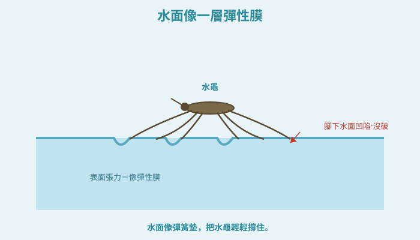
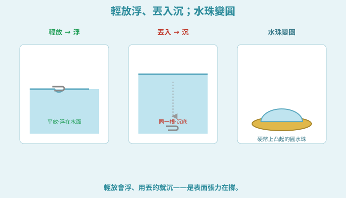
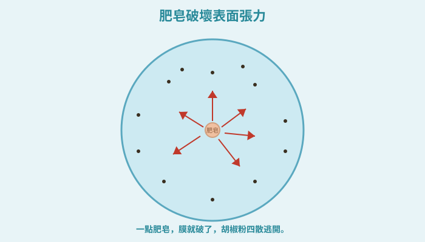
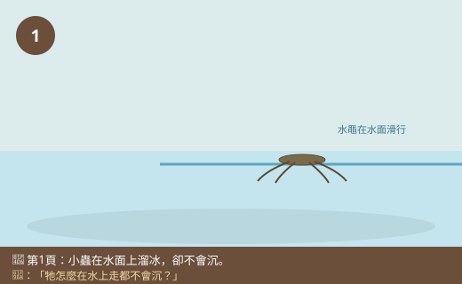
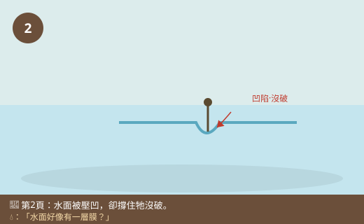
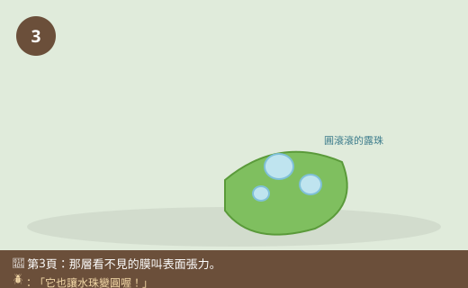
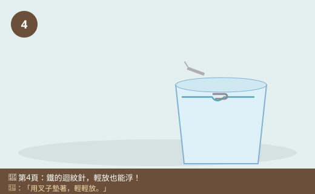
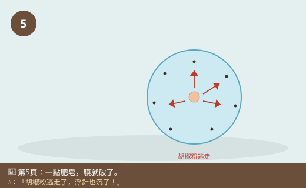
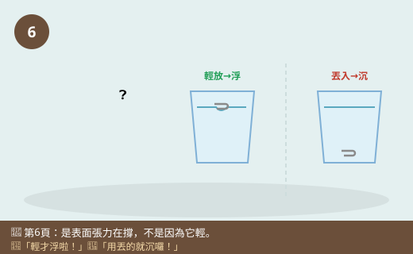

圖一（機制圖）：水面像一層彈性膜

- 圖像目的
- 呈現水面像彈性膜、被壓凹卻撐住水黽。
- 圖中應出現的元素
- 水黽六腳張開站水面，每隻腳下水面凹一個小坑（沒破）；標「表面張力＝像彈性膜」。
- 必須標示的科學概念
- 表面張力撐住輕小物、腳下水面凹陷但不破。
- 圖說
- 「水面像彈簧墊，把水黽輕輕撐住。」
- AI 繪圖提示詞
- 溫暖手繪繪本風，水黽六腳張開站水面，每隻腳下水面凹陷小坑，標表面張力像彈性膜。繁體中文，白底。
- 避免畫錯的提醒
- 腳下水面「凹陷但沒破」；水黽六足三體段（昆蟲）。
💡 池塘上，小小的水黽在水面上「溜冰」，怎麼都不會沉下去！迴紋針明明是鐵做的，小心放上水面也能浮著。水面好像有一層看不見的「彈力膜」……
| 適合年級 | 國小四年級 |
|---|---|
| 可銜接年級 | 四年級 → 五年級（水的性質）→ 國中分子間作用力 |
| 主題分類 | 空氣、水與天氣 |
| 核心概念 | 水面有表面張力，像一層薄膜；能撐住輕小物；肥皂會破壞它 |
| 關鍵詞 | 表面張力、水面、水黽、迴紋針、水珠、肥皂 |
| 可銜接的國中概念 | 分子間作用力、內聚力、界面現象 |
| 建議閱讀時間 | 約 15 分鐘 |
| 適合搭配的課堂活動 | 硬幣上滴水珠、迴紋針浮水面、胡椒粉逃跑實驗 |
校外教學來到生態池邊，小狐同學趴在池畔看得入神。水面上，有幾隻細細長長、六隻腳張得開開的小蟲，在水面上一滑一滑地移動，速度還挺快，就像在溜冰一樣！最神奇的是——牠們的腳明明踩在水面上，卻一點都不會沉下去，連水都沒濺起來。
「水滴小隊長，你看你看！這些蟲怎麼在水上走路都不會沉？」水滴小隊長笑著說：「牠們叫『水黽』，是在水面上生活的高手。你有沒有發現，牠的腳踩在水面的地方，水面好像被壓得凹下去一點點，卻沒有破？」小狐同學湊近一看，果然！每隻腳下的水面都凹了一個小小的坑，但水就是撐住牠，沒讓牠掉進去。
「好奇怪喔，水又不是固體，怎麼會撐住牠？水面是不是有一層看不見的膜呀？」小狐同學百思不解。這時甲蟲博士飛過來，得意地說：「小狐，你觀察得真仔細！水面確實好像有一層『看不見的薄膜』，科學家叫它『表面張力』。這層『膜』有彈性，能撐住又輕又小的東西——不只水黽，連鐵做的迴紋針，只要小心放，也能浮在水面上呢！」
小狐同學驚呼：「鐵的迴紋針也能浮？我才不信！鐵不是都會沉嗎？」黑熊老師笑著拿出一杯水和一根迴紋針：「眼見為憑。等一下我教你怎麼把迴紋針『放』在水面上，你就會親眼看到水面這層神奇的『彈力膜』。今天我們就來認識水的『表面張力』，還要玩幾個會讓你嚇一跳的小魔術！」
黑熊老師，水黽為什麼在水面上走都不會沉？
因為水面有一種力量，叫做表面張力——水面就像蒙了一層有彈性的薄膜。水黽的身體很輕、六隻腳張得很開，把重量分散到很大的面積，腳上還有防水的細毛，所以這層「膜」就撐得住牠，讓牠像踩在彈簧墊上一樣不會沉。
那為什麼水會有這層「膜」？
因為水裡面一顆顆看不見的小水粒（水分子）互相拉住對方。在水的最表面，這些小水粒特別團結、緊緊拉在一起，就形成一層像膜一樣、有點緊繃的表面，這就是表面張力。（更詳細的「水分子互相吸引」到國中會學到。）
補一個好玩的冷知識！表面張力也是水珠變圓的原因喔！你看荷葉上的露珠、水龍頭快滴下來的水滴，都是圓滾滾的——因為表面張力想把水「縮成最小、最省力」的形狀，而球形就是表面積最小的形狀，所以水珠會盡量變圓！
好神奇！那有什麼東西可以破壞這層膜嗎？
有喔！肥皂（清潔劑）就是表面張力的剋星！只要在水裡加一點肥皂或洗碗精，就會破壞這層膜、讓表面張力變小。所以本來浮在水面的迴紋針，只要一滴肥皂水碰到，牠就會馬上沉下去；水黽在有清潔劑的髒水裡也會很難生存。這也是為什麼肥皂能洗掉油污——它能讓水「更會沾濕、更會鑽進去」。
原來肥皂這麼厲害！那表面張力對我們生活有用嗎？
用處可多了！表面張力讓杯子裡的水可以裝得比杯口高一點點（凸出來）都不會溢；讓毛巾、紙巾能把水吸上來（配合毛細現象）；植物也靠類似的力量把水從根運到葉子。生活中到處都有它的影子。
我們來玩表面張力小實驗！放迴紋針時要非常輕、非常慢（可以用叉子或衛生紙墊著放），不要把它「丟」進去。做「胡椒逃跑」實驗時，手指沾的肥皂只要一點點。實驗用的是清水和少量食材，不要喝，做完把桌面擦乾、洗手。
哼，迴紋針會浮在水面，一定是因為它很輕啦！輕的東西本來就會浮，跟什麼表面張力才沒關係咧！
迷思怪獸，這次抓到你的破綻了！如果只是因為輕才浮，那我把迴紋針直接丟進水裡，它應該還是浮著才對——但你看，用丟的它馬上就沉下去了！同一根迴紋針，輕輕「放」在水面上會浮、用「丟」的卻會沉，可見撐住它的不是「浮力」，而是水面的「表面張力」這層膜。而且我只要滴一滴肥皂水，膜一破，浮著的迴紋針立刻沉下去——這更證明是表面張力在撐，不是因為它輕！
原來是水面的膜在撐住它！我要來挑戰讓迴紋針浮在水面上。
水的最表面有一種力量，叫表面張力，就像蒙了一層看不見、有彈性的薄膜。這層膜能撐住又輕又小的東西：水黽身體輕、六腳張開、腳上有防水細毛，所以能踩在水面上「溜冰」不會沉；鐵做的迴紋針只要輕輕放（不是用丟的），也能浮在水面。表面張力還讓水珠變圓、讓水裝得比杯口高一點不會溢。肥皂（清潔劑）是它的剋星——加一點肥皂就會破壞這層膜，浮著的迴紋針會馬上沉下去。
表面張力是液體表面像有彈性薄膜、傾向縮到最小面積的性質。成因是液體內部的小粒子（分子）彼此互相吸引；表面的粒子因為上方沒有同類拉它，會被向內、向旁拉，使表面呈現緊繃狀態。表面張力能支撐超過自身「浮力」所能承受的輕小物（水黽、平放的迴紋針），並使自由液滴趨向球形（相同體積下球的表面積最小）、使水面可略高於杯口。界面活性劑（肥皂、清潔劑）會插入水表面、削弱粒子間的吸引，降低表面張力，故能使浮針下沉、讓水更易潤濕與去污。關鍵區辨：撐起平放迴紋針的是表面張力，而非一般浮力（同一針投入即沉）。
水分子間有氫鍵等分子間作用力，產生內聚力。液體表面分子受力不均（內側與側向的吸引未被上方抵消），使表面像被拉緊的彈性膜，即表面張力（單位 N/m），驅使液面縮至最小面積。水的表面張力在常見液體中相對高。界面活性劑分子具親水端與疏水端，聚集於界面破壞氫鍵網絡，顯著降低表面張力並增進潤濕與乳化（去污原理）。表面張力與毛細現象（附著力與內聚力競爭）共同影響植物輸水、紙巾吸水等。國中理化「物質的組成與性質」「分子間作用力」會延伸內聚力、附著力與界面現象。









| 適合年級 | 四年級 |
|---|---|
| 材料 | 透明杯／碗、清水、迴紋針數個、叉子或小紙片、乾淨的一元硬幣、滴管或吸管、胡椒粉（或痱子粉）、洗碗精（肥皂）、紀錄表 |
迴紋針是「輕放」還是「丟入」／水裡有沒有加肥皂。
迴紋針是浮還是沉、胡椒粉有沒有散開、硬幣能滴幾滴。
同一杯清水、同樣的迴紋針、同樣的滴水方式。
| 做法 | 結果（浮／沉／散開／滴數） |
|---|---|
| 迴紋針輕放 | |
| 迴紋針丟入 | |
| 硬幣滴水（滿溢前滴數） | |
| 胡椒粉＋肥皂 | |
| 浮針＋滴肥皂水 |
輕放的迴紋針會浮在水面、腳下水面凹陷；丟入的同一根針卻沉底——這證明撐住它的不是浮力，而是水面的表面張力（像彈性膜）。硬幣上可以滴出凸起的圓水珠、滴好多滴才溢，也是表面張力撐著。撒了胡椒粉的水面，一碰到肥皂，胡椒粉會迅速向四周逃開；浮著的迴紋針一遇肥皂水也馬上下沉——因為肥皂破壞、降低了表面張力，膜破了就撐不住了。這說明水面的表面張力真實存在，而且怕肥皂。
⚠️ 安全提醒：迴紋針、硬幣等小物不可放入口中，以免誤吞；玻璃杯小心別打破。實驗用水與胡椒不可飲用。使用洗碗精後要洗手，不要揉眼睛。桌面濺水要擦乾以免滑倒。放迴紋針時動作輕柔，避免被尖端刺到。
👾 迷思說法：迴紋針能浮在水面，是因為它很輕（浮力）。
為什麼容易誤解：覺得會浮就是因為輕、因為浮力。
✅ 正確說法：撐住平放迴紋針的是表面張力，不是一般浮力。證據：同一根針輕放會浮、用丟的卻沉；而且一滴肥皂水就能讓浮著的針沉下去。如果是浮力，丟進去也該浮、加肥皂也不會沉。
可以怎麼驗證：比較「輕放」和「丟入」同一根針的結果，再滴肥皂水看它下沉。
👾 迷思說法：水面真的有一層固體的「膜」蓋在上面。
為什麼容易誤解：「像膜一樣」聽起來像真的有一張膜。
✅ 正確說法：水面沒有真正的固體膜。是水最表面的小水粒特別緊緊互相拉住，讓表面「表現得像」一層有彈性的膜，這是一種力（表面張力），不是一張真的膜。
可以怎麼驗證：用手指戳水面，並沒有戳破什麼薄膜，只是感覺到水；力量消失後水面又恢復。
👾 迷思說法：加肥皂會讓水的表面張力「變大」，所以更會撐住東西。
為什麼容易誤解：覺得加東西進去會「加強」水。
✅ 正確說法：剛好相反！肥皂（清潔劑）會降低、破壞表面張力，讓水面撐不住東西。所以加了肥皂，浮針會沉、胡椒粉會逃散。
可以怎麼驗證：浮著的迴紋針滴一滴肥皂水就下沉，證明肥皂讓表面張力變小。
👾 迷思說法：水珠會變圓，是因為有人把它捏圓的，或水本來就是圓的。
為什麼容易誤解：看到水珠圓圓的，覺得理所當然。
✅ 正確說法：水珠變圓是表面張力把水「縮成表面積最小」的形狀造成的，而球形正是表面積最小的形狀。不是有人捏圓，而是表面張力的自然結果。
可以怎麼驗證：觀察荷葉露珠、硬幣上的水珠都自動變圓；加肥皂破壞張力後水就攤平了。
👾 迷思說法：水黽不會沉，是因為牠會游泳或有特殊魔法。
為什麼容易誤解：覺得牠在水上活動一定很會游。
✅ 正確說法：水黽是靠表面張力撐住的——牠身體很輕、六隻腳張得很開把重量分散、腳上有防水細毛不會弄濕，所以能站在「彈性膜」上。不是魔法，是善用表面張力。
可以怎麼驗證：在有清潔劑的水裡（表面張力被破壞），水黽就無法像平常那樣停在水面。
1. 水面像有一層「看不見、有彈性的膜」，這種性質叫什麼？
(A) 浮力 (B) 表面張力 (C) 摩擦力 (D) 磁力
答案：B。水表面的緊繃性質稱表面張力。
2. 為什麼水黽能停在水面上不會沉？
(A) 牠很會游泳 (B) 表面張力撐住牠，加上牠輕、腳張開又防水 (C) 牠會飛 (D) 水很淺
答案：B。表面張力＋輕、腳分散重量、防水腳毛。
3. 同一根迴紋針，怎樣放才會浮在水面？
(A) 用力丟進去 (B) 非常輕、平放在水面上 (C) 立起來插進去 (D) 怎樣都會沉
答案：B。輕放才靠表面張力撐住；丟入會沉。
4. 在浮著迴紋針的水面滴一滴肥皂水，會發生什麼事？
(A) 迴紋針浮得更高 (B) 迴紋針馬上沉下去 (C) 水結冰 (D) 沒有變化
答案：B。肥皂破壞表面張力，針就下沉。
5. 荷葉上的露珠、硬幣上的水珠會變圓，是因為？
(A) 有人捏圓 (B) 表面張力把水縮成表面積最小的球形 (C) 水本來方形 (D) 太陽曬圓的
答案：B。表面張力使液滴趨向球形。
1. 什麼是「表面張力」？請用你自己的話說明，並舉一個看得到的例子。
表面張力是水的最表面有一種力量，讓水面像蒙了一層看不見、有彈性的薄膜，能撐住又輕又小的東西。例子：水黽能站在水面上不會沉、迴紋針輕放能浮在水面、荷葉上的露珠變成圓形、硬幣上可以滴出凸起的水珠。
2. 為什麼說「迴紋針浮在水面不是因為它輕」？你會用什麼實驗證明？
因為如果只是因為輕才浮，那用丟的也該浮，但同一根迴紋針用丟的卻馬上沉下去，只有輕輕平放才會浮。可以做這個對照實驗：把同一根迴紋針一次輕放（浮）、一次丟入（沉）來比較；再對浮著的針滴一滴肥皂水，它會立刻下沉。這都證明撐住它的是水面的表面張力，不是因為它輕。
3. 肥皂對水的表面張力有什麼影響？這和肥皂能洗掉油污有什麼關係？
肥皂（清潔劑）會破壞、降低水的表面張力。因為表面張力變小後，水變得更容易「潤濕」東西、更容易鑽進細縫和油垢裡，所以肥皂能幫助水把油污包起來、洗掉。這也是為什麼加了肥皂後，浮著的迴紋針會沉、胡椒粉會逃散。
1. 小狐想比較「清水」和「加了鹽的水」，哪一種比較能讓迴紋針浮起來（表面張力比較大）。請你幫他設計一個公平的實驗，說明要控制哪些變因。
可以準備兩個一樣的杯子，一杯清水、一杯加了鹽並攪拌溶解的鹽水，用同樣「輕放」的方法（都用叉子墊著）放同樣的迴紋針，比較兩杯各能不能讓針浮著、或能撐住幾根。控制變因：杯子、水量、水溫、迴紋針、放的方法都一樣，只改變「有沒有加鹽」。重點是能提出公平比較、只變一個變因的設計（實際結果可實驗觀察並記錄）。
2. 有些人在池塘或水溝裡倒入很多清潔劑（肥皂水）。根據這一課，你覺得這樣做對住在水面的水黽等生物可能有什麼影響？我們應該怎麼做？
因為清潔劑會破壞水的表面張力，水面就撐不住水黽等靠表面張力生活的小生物，牠們可能無法停在水面、容易沉下去，影響覓食和生存；清潔劑也會污染水質、傷害其他水中生物。所以我們不應該把清潔劑、肥皂水隨意倒進池塘、水溝或河川，家庭汙水要經過處理，才能保護水中的生態。（能連結表面張力被破壞與生態保護即可。）
| 向度 | 待加強（1） | 通過（2） | 優秀（3） |
|---|---|---|---|
| 概念理解 | 認為浮針只是因為輕 | 知道表面張力撐住輕小物 | 能以對照與肥皂效應完整區辨表面張力 |
| 探究技能 | 無法完成觀察 | 能操作浮針/胡椒實驗並記錄 | 能設計清水vs鹽水等公平比較 |
| 態度 | 忽視安全與衛生 | 遵守不誤吞、不飲用、洗手 | 主動關注清潔劑對水域生態影響 |
| 檢核項目 | 結果 | 備註 |
|---|---|---|
| 科學概念是否正確 | ✅ | 表面張力成因、撐住輕小物、水珠球形、肥皂降低張力、與浮力區別，敘述正確。 |
| 是否符合年級理解程度 | ✅ | 四年級以水黽、浮針等現象切入，分子吸引僅點到。 |
| 是否有錯誤或過度簡化的比喻 | ✅ | 「彈性膜」比喻恰當，並已澄清非真的固體膜。 |
| 是否清楚區分觀察、推論與解釋 | ✅ | 由輕放vs丟入、加肥皂的對照觀察推論表面張力作用。 |
| 圖像提示詞是否可能造成誤解 | ✅ | 已提醒凹陷不破、同一根針、胡椒由中央散、水黽六足。 |
| 實驗是否安全 | ✅ | 提醒小物勿誤吞、不飲用、玻璃小心、洗手，安全低成本。 |
| 是否需要補充資料來源 | ✅ | 對應 INe-Ⅱ-1 與探究學習表現；表面張力/分子作用力屬國中，見教師補充。 |
| 是否適合轉成 HTML 網頁 | ✅ | 結構完整，含互動測驗與摺疊區。 |